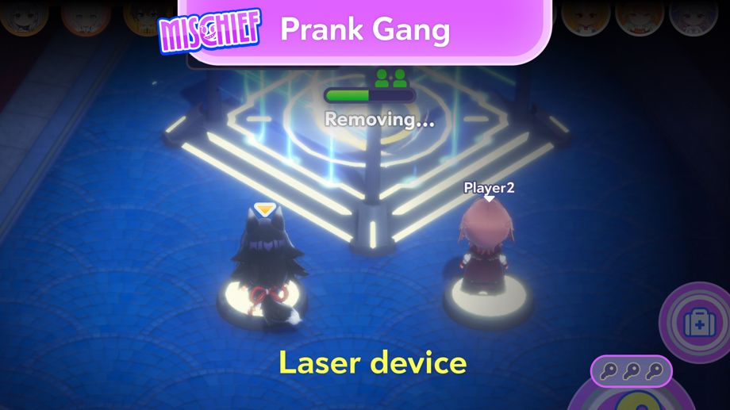
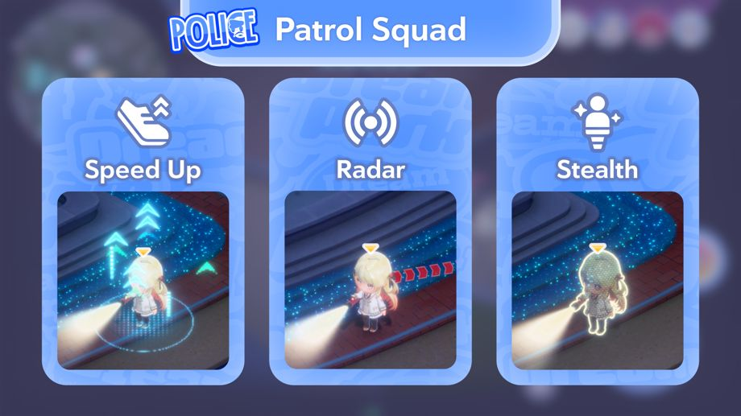

2026-08-28 11:00:00全新小遊戲「夜色追逐戰」將開幕！
◆小遊戲新增日期
2026-08-28 11:00:00～
◆參加條件
過關區域關卡「夜色盛宴，火花四射的追逐戰」
※過關主線關卡1章「協奏花園」，即可解鎖區域關卡「夜色盛宴，火花四射的追逐戰」。
※於多人遊玩的私人房間中，只要過關主線關卡1章4話「Mythical Connection」後即可遊玩。
全新小遊戲「夜色追逐戰」說明

夜色追逐戰是分成逃跑的惡作劇組與負責追捕的巡邏小隊，互相對抗的小遊戲。
惡作劇組說明

惡作劇組需避開巡邏小隊的追捕，開放5座設施即可獲勝。
開放設施，需使用散落於樂園內的鑰匙。
◆操作方法
・Pick：靠近鑰匙後點擊，即可拾取。
・Use：持有鑰匙時靠近設施並長按，即可使用鑰匙。
※持有鑰匙時靠近設施，按鍵將會自動切換。
巡邏小隊說明

巡邏小隊成功逮捕所有惡作劇組成員，即可獲勝。
靠近惡作劇組成員後按下「逮捕」，即可抓住對方。
若惡作劇組未能於時限內開放5座設施，亦由巡邏小隊獲勝。
關於惡作劇組的救援

惡作劇組可以救出被逮捕的夥伴。
靠近被逮捕的夥伴後長按「救援」，即可救出。
關於惡作劇組的雷射機關

惡作劇組可善用雷射機關，在比賽中取得優勢。
解除雷射機關後，開放每座設施所需的鑰匙數量將減少1把。
踩上雷射機關前的開關，即可解除機關。
開關共有2個，兩人同時踩上可更快解除機關。
關於巡邏小隊的技能

巡邏小隊可使用技能。
巡邏小隊可使用的技能共有3種，將隨機分配給每位玩家。
◆技能說明
・速度提升：提升移動速度。
・雷達探測：可以偵測附近惡作劇組成員的位置。
・隱身：變成半透明狀態，讓惡作劇組難以察覺。
※技能效果僅持續一段時間。
※使用技能後，需等計量條滿格才可再次使用。
關於獎勵

無論勝負，皆可依分數獲得獎勵。
獎勵可獲得協奏花園硬幣。
協奏花園硬幣可在音波菈牡市場兌換各種道具。
注意事項
・活動期間與內容，可能在未經預告的情況下變更。